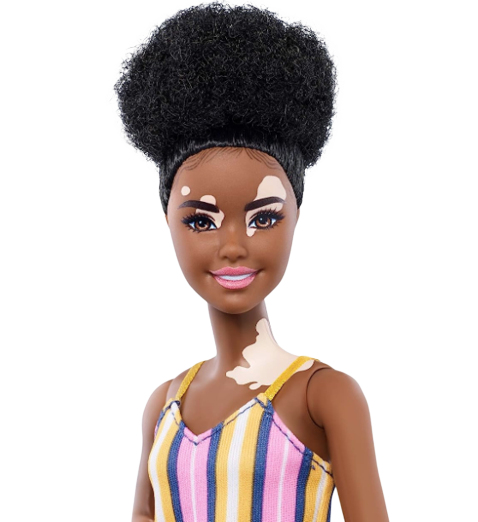
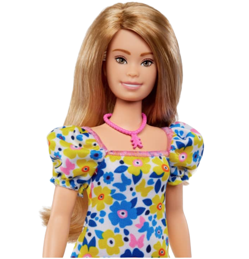
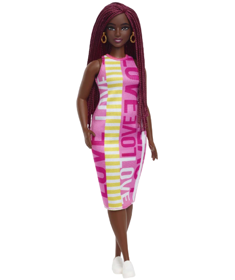
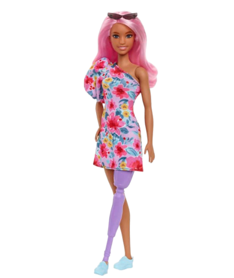
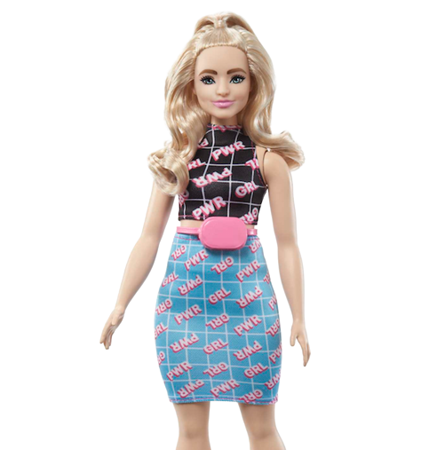
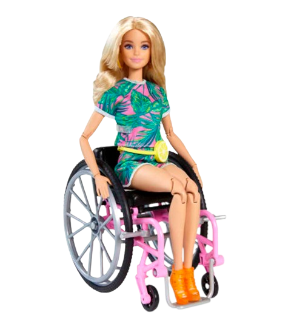

Barbie Vitiligo
Além de ter a pele negra e o cabelo black power, essa boneca possui vitiligo, uma doença genética e autoimune que causa manchas brancas na pele devido à diminuição ou ausência de melanócitos. O legal é que as marcas estão em áreas visíveis e a boneca as veste com orgulho e confiança.(Uol) Para a criação da Barbie, a empresa consultou um dermatologista especializado para garantir que a condição fosse representada com precisão.
Compre aqui

Barbie com Síndrome de Down
Esta é a primeira Barbie® com síndrome de Down! A Barbie® fez parceria com a National Down Syndrome Society para garantir que a boneca representasse com precisão uma pessoa com síndrome de Down.Ela vem com borboletas e a paleta de cores azul e amarelo, que são símbolos e cores associados à conscientização da síndrome de Down. O colar com pingente rosa tem três setas para representar o terceiro cromossomo 21 que os indivíduos com síndrome de Down têm, e eles apontam para fora para representar a conscientização e o avanço. (Mattel)
Compre aqui!

Barbie Curve Plus
Esta Barbie possui um corpo diferente das demais, plus size, ou curve, repesentando diversos corpos. Ela tem a pele negra retinta, cabelo ruivo trançados. A fim de não esteriotipar um só tipo de beleza. A barbie possui traços mais modernos e realistas como as sobrancelhas bem parecidas com o que as pessoas tem usado ultimamente.
Compre aqui!

Barbie com Perna Protética
A barbie possui uma diferença de membro e usa uma perna protética roxa, que pode ser desmontada. Ela tem o tom de pele pardo e cabelos longos e lisos rosa! A empresa contou com o apoio de um grupo de jovens com deficiência para a criação da boneca.
Compre aqui!

Barbie Curve
Esta Barbie tem o corpo curvilíneo e repesenta diversos corpos. Ela tem a pele branca, cabelo loiro ondulado, com penteado moderno meio preso. Moderno também são suas sobrancelhas de cor castanho, contrastando com o tom do cabelo, remetendo talvez a uma maquiagem ou tintura no cabelo. Sua roupa tem um estilo ousado e fashion com seu conjunto de saia tubinho e estampa "GRL PWR"!
Compre aqui!

Barbie Cadeirante
Essa Barbie possui uma deficiência física e por isso precisa usar uma cadeira de rodas que funciona de verdade, ou seja, possui freios reais e vem com uma rampa que ajuda na locomoção. Essa em particular, tem as características físicas muito semelhantes a barbie original. Suas roupas e acessórios são cheios de estilo e muito coloridas.
Compre aqui!